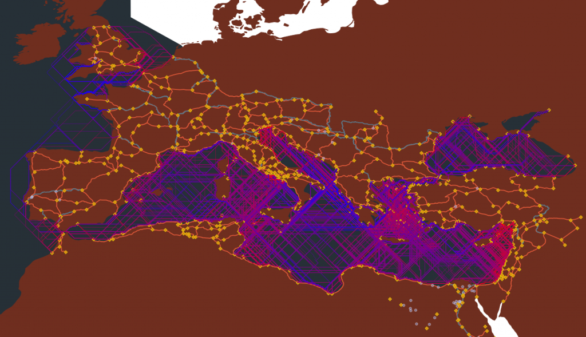
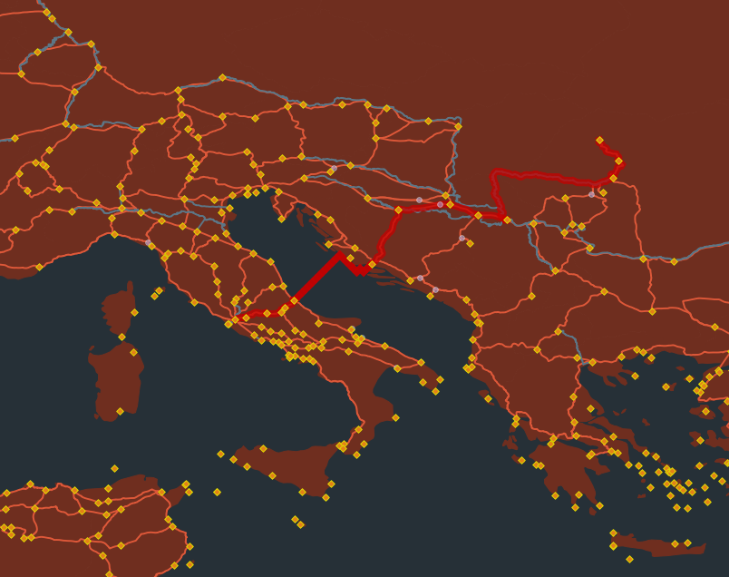
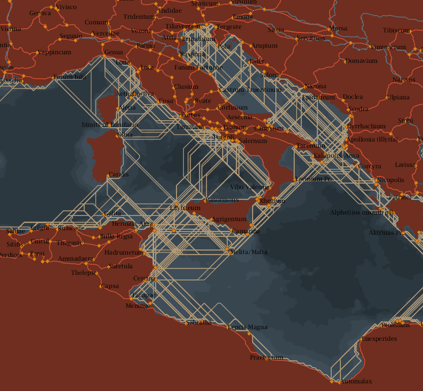

I’ve been working a lot with pgRouting in PostGIS lately. While the work I was doing with geographic networks originally used general purpose network analysis tools like Gephi, I’ve moved the entire Roman transportation network into a PostGIS2 database to allow for concurrent editing and the use of spatial queries. I thought it might be useful to explain this process for interested parties, with the inclusion of all the SQL queries to get people started.
I am by no means an expert with PostGIS or pgRouting and would not have been able to accomplish any of this without leaning heavily on the community both here at Stanford and the larger PostGIS community on the Internet. Postgres, which underpins PostGIS, is still less accessible than MySQL (imagine my chagrin to find out that functions like GROUP BY are, in MySQL, “not compliant” and I had to learn how to do things like SELECT DISTINCT ON) but is still not so different for queries and worth it to get access to PostGIS.
PostGIS itself is simply an extension in the form of new functions and datatypes for Postgres which gives users the ability to query spatial objects to find out which objects in a database intersect with or are within X distance from other objects. pgRouting is a further extension to PostGIS, which gives you the ability to run pathfinding queries on tables of links. While PostGIS2 has topology support, it’s really much more sophisticated than what is necessary for the kind of geographic network analysis we’re doing with the Roman Empire. The topology support does allow you to create edges and faces from existing, non-network aware polygons and polylines, but I’m even less familiar with topology in PostGIS than I am with the general spatial functionality, so any explanation of that will have to wait for aother time. For the purposes of the examples below, we’ll have a simple spatial table that looks something like this:
source, target, cost, geometry, name
"San Jose", "San Francisco", 1, POLYLINEDATA, "101Freeway"
"San Jose", "San Francisco", .75, POLYLINEDATA, "80Freeway"
"San Francisco", "Santa Rosa", 1, POLYLINEDATA, "101Freeway"
I’m fudging it a bit up there, because pgRouting requires source and target IDs to be integers (so San Francisco would actually be 1, San Jose 2, Santa Rosa 3) and the queries below are pointed at a geometry column that follows the standard “the_geom” naming convention. You can already tell by the data format that the cost can be declared or derived from the geometry and is based on whatever cost you want to measure (you could derive an expense in dollars based on miles driven multiplied by a per-mile cost, for instance, using st_length(the_geom) * .52, which would allow you to add toll costs). Cost can be speed, distance, expense or even some value based on convenience or scenic quality, if you can develop such a metric.


Routes in the Roman Empire from the ORBIS project
This is the underlying data format of the network above. Each polyline (a technical term for a line in spatial data, as opposed to a point or polygon) or “route segment” above has a source and target field, indicating that it is the road, river or sea route from one site to another. Pathfinding aggregates these individual pieces into a single collection of lines that describes the route from one point to another. Each route segment can only be the length from one point to another, so that the historic Via Appia becomes a collection of road segments from site to site:
The road from Rome to Tarracina
The road from Aeclanum to Vensusia
The road from Caudium to Beneventum
The road from Sinuessa to Capua
The road from Beneventum to Aeclanum
et cetera
If we have such a table, we can use it to then calculate the total cost of such a path through the network with a query like this:
SELECT
0 as grouping_category,
SUM(st_length(Geography(ST_Transform(network.the_geom,4326))))::double precision as length_calculated
FROM shortest_path('
SELECT gid as id,
source::integer,
target::integer,
st_length(Geography(ST_Transform(network.the_geom,4326)))::double precision as cost
FROM network',
1188, 1317, false, false)
LEFT JOIN network ON network.gid = edge_id
GROUP BY
grouping_category
You’ll notice I’ve re-joined the network table to the results from the shortest_path function. This is because the function only returns a list of the edges (or links) and their cost that make up the least cost path through the network. You need to rejoin the original table to get access to any other data columns, in the case above I need to measure and sum the geometry column to get a total distance.
This query determines the shortest path through your network using Dijkstra distance from vertex 1188 to vertex 1317, and is undirected (the “false” variable right after source and target, to make it directed, you would want that to be set to true, as seen in the queries below). pgRouting also includes A* pathfinding, which uses heuristics to improve performance for large networks, as well as a Traveling Salesperson algorithm to determine the most efficient path for multiple destinations in a single trip, but these seem to be based on Euclidean distance between points rather than network distance constrained to particular routes.
The above query will give you a total cost of a route, but if you want to display the route itself, you’ll need to select that geometry column for display, for instance in QGIS as a query layer:
SELECT
network.gid,
network.route_id,
network.source,
network.target,
st_length(Geography(ST_Transform(route_top.the_geom,4326)))::double precision as length_calculated,
network.the_geom
FROM shortest_path('
SELECT gid as id,
source::integer,
target::integer,
st_length(Geography(ST_Transform(network.the_geom,4326)))::double precision as cost
FROM network',
1188, 1317, false, false)
LEFT JOIN network ON network.gid = edge_id

The shortest path from Rome to Porolissum
If you don’t have a usable network to experiment with, a simple way to test network pathfinding algorithms is to build a mesh of points and connect them with polylines. This is the same method I used to build a large mesh for the sea areas in the study region. While this doesn’t use pgRouting, I think it’s a good query to include. First create a grid of points based on lat-long coordinates. Then, run create a table of polylines using something like this:
INSERT INTO o_mesh (source, target, direction, the_geom)
SELECT
source.gid as source, target.gid as target, (
case
when source.xcoord = target.xcoord AND source.ycoord < target.ycoord then 'N'
when source.xcoord < target.xcoord AND source.ycoord < target.ycoord then 'NE'
when source.xcoord < target.xcoord AND source.ycoord = target.ycoord then 'E'
when source.xcoord < target.xcoord AND source.ycoord > target.ycoord then 'SE'
when source.xcoord = target.xcoord AND source.ycoord > target.ycoord then 'S'
when source.xcoord > target.xcoord AND source.ycoord > target.ycoord then 'SW'
when source.xcoord > target.xcoord AND source.ycoord = target.ycoord then 'W'
when source.xcoord > target.xcoord AND source.ycoord < target.ycoord then 'NW'
else 'ER'
end ) as direction,
ST_MakeLine(source.the_geom,target.the_geom) AS the_geom
FROM
gridtable AS source LEFT JOIN gridtable AS target ON target.xcoord > source.xcoord - .15 AND target.ycoord > source.ycoord - .15 AND target.xcoord < source.xcoord + .15 AND target.ycoord < source.ycoord + .15
WHERE
target.gid IS NOT NULL
AND (
(target.xcoord = source.xcoord AND target.ycoord <> source.ycoord)
OR
(target.xcoord <> source.xcoord AND target.ycoord = source.ycoord) )
You’ll notice I used a CASE statement to set directionality of the links, which is necessary for calculating sea travel as it allows us to integrate different wind strength by direction. I’m also using a grid built at .1 degree intervals, so I know exactly how they join up, but I could use more interesting spatial queries to join existing points based on distance.
Once you have a mesh like this, you can identify points within it (or, in the case of actual Roman Sea Ports, points near it) to derive routes to and from. Since, theoretically, a traveler could leave any port and travel to any other port, I need to know all the least shortest paths from each port to each port. With 340 or so ports, that number is over 110,000 least cost paths, which on my machine using my 40,000 point sea mesh comes out to a 30+ hour query that looks like this:
SELECT
source, target, (SELECT SUM(cost) FROM
(SELECT mesh.cost FROM shortest_path('SELECT gid as id,
source::integer,
target::integer,
cost::double precision as cost
FROM mesh',
source, target, true, false) LEFT JOIN mesh ON mesh.gid = edge_id
) AS subquery
) AS total, (SELECT ST_Collect(the_geom) FROM
(SELECT * FROM shortest_path('SELECT gid as id,
source::integer,
target::integer,
cost::double precision as cost
FROM mesh',
source, target, true, false) LEFT JOIN mesh ON mesh.gid = edge_id
) AS subquery
) AS the_geom
FROM sitelist_tofrom
You’ll notice I call the shortest_path function twice, once to aggregate the cost of the discovered route and again to aggregate the geometry of that route. My sitelist_tofrom is simply a table of source-target pairs of the points within the mesh table that I want to know paths to and from. You can reduce this with some general trimming to remove ports that are X distance away as-the-crow-flies (the maximum distance sea route for our study is 800km, so eliminating ports that are more than 800km away from each other makes this a bit more manageable) but I’m sure there are better ways to index the data and utilize the routing code more deftly.

Sea routes that take less than 3 days of travel time during January, derived from the above code
This is by no means the definitive pgRouting post and I’d like to make it clear, again, that I’m still a novice when it comes to using PostGIS. However, I think there may be folks out there who would like to experiment with routing and this may provide them with some inspiration to install PostGIS and pgRouting on their system and give it a try. It’s also meant to explain some of the methods we’re using to better understand travel in the Roman Empire, in case other scholars would like to move beyond traditional spatial analysis into geographic network analysis without getting involved with ArcGIS’s Network Analyst or building everything from scratch in a more general network analysis tool.